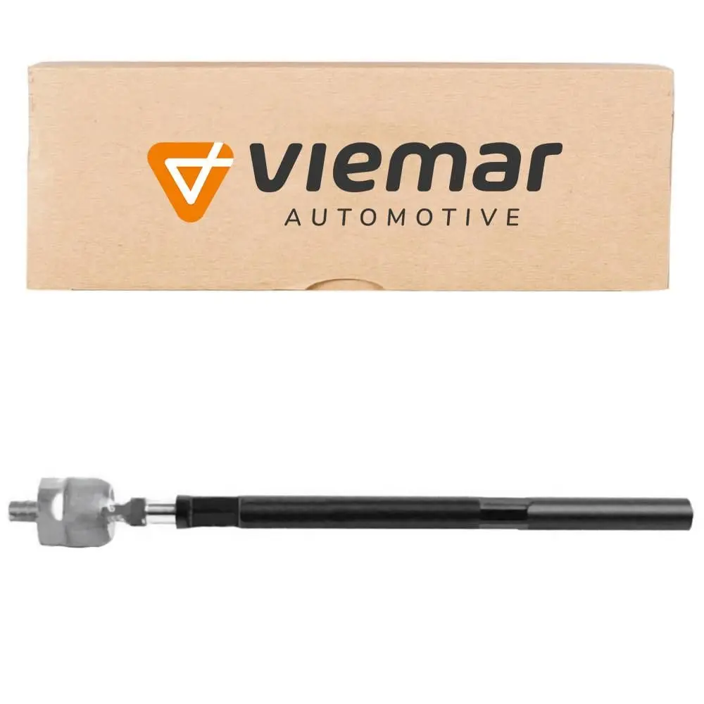

A barra axial funciona como uma peça essencial no auxílio da rotação das demais peças da caixa de direção. Ela atua nas rodas dianteiras do automóvel, por meio de articulações que permitem o movimento da mesma e, portanto, o pleno funcionamento de todo o sistema do veículo.